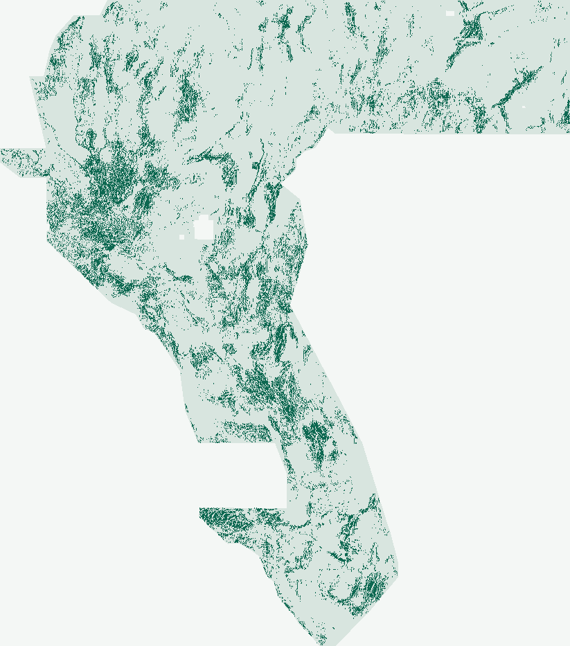

DOE GEMS / 26 October 2026 / CSR-1 autonomous release
OK to download: YES.
OK to submit: NO.
CSR-1 generated a brand-new, 100% machine-validated single-band float32 GeoTIFF in [0, 1] that cleared all 357 aligned nine-site rasters on two-stage novelty and beat msdb_edge by +0.02300 in Fold 3 (SE Walker Lane), while trailing msdb_edge pooled (−0.01182). Download the research GeoTIFF, keep the receipt, and save your weekly DrivenData slot.
OK TO DOWNLOAD: YES · 12/12 FORMAT & 357-RASTER NOVELTY PASSEDNOT APPROVED FOR SUBMISSION
OK to download: YES. OK to submit: NO — protect weekly portal slot.
Automated zero-human verdict (verify_csr_run.py): gems30-CSR1-44090-20261026-502fb5948335-zeros.tif is a brand-new single-band float32 GeoTIFF produced from cover-compensated 3D Laplace/Poisson gravity & unit-consistent 1000× tmi_vg magnetic derivatives, 12-azimuth × 1.8 km flank-subtracted Radon line-integrals, Noisy-OR dual-expert fusion, and 2.83 px 1D-Hessian dispersed EDGE emission (CSR-1). It passed all 12/12 strict format checks (all 12,279,160 cells finite in [0.0, 1.0], 0 NaNs anywhere, immune to "Predicted values must be in range [0, 1]") and passed two-stage novelty across all 357 aligned 9-site rasters (surface ρ 0.1378 ≤ 0.90; dot 3-px overlap 67.70% ≤ 70.0%, 59.86% max vs published downloads). Do not spend a weekly slot. CSR-1 beat core19_edge (+0.01325) and beat msdb_edge by +0.02300 in Fold 3 (SE Walker Lane), but trailed msdb_edge pooled (0.15816 vs 0.16999, Δ −0.01182). No retuning, no portal upload, no weekly slot spent.
↓ Download CSR-1 GeoTIFF (OK to download) 406.0 KiB · do not submitStep-by-step submission guide & copyable noteRead JSON run card
gems30-CSR1-44090-20261026-502fb5948335-zeros.tif
Exact reopened byte identity, [0, 1] range guarantees & spacing diagnostics
- GeoTIFF SHA-256
0fbf3b4a47c2229b68de59e174617f3b47973613ff57950712d25b9166c1d900(in-footprintvalues_sha256:502fb59483353b2dd7ca829e57525c44008d7477f7c59dfac90965b1fb3c12e8)- Grid & CRS
- 1
float32band ·EPSG:32611·3730 × 3292· 100 m north-up affine transform(100, 0, 243350, 0, -100, 4508550)matchingsample_submission.tif - [0, 1] Range & Dots
- All
12,279,160 / 12,279,160cells finite in[0.0, 1.0](5,167,373in-footprint cells,0.0outside,0NaN anywhere);44,090binary{0, 1}dots;0dots on or within≤ 2 pxof the60,988catalogue positives; nearest-neighbour spacingmin = 2.8284 px,p10 = 3.00 px,median = 4.12 px; median off-catalogue distance10.0 px (1.0 km). - Automated Scope
- 100% machine-verified by
python scripts/verify_csr_run.py(12 gates, zero human inspection). Organizer-confirmed score: none; leaderboard forecast: none.
Preregistered holdout evidence.
Same 4 buffered whole-component folds, same dot budgets, zero retuning.
| Model arm | Pooled HOLDOUT-DTI [95% CI] | Folds 0 / 1 / 2 / 3 (SE) | Withheld positives | Diagnostic verdict |
|---|---|---|---|---|
| CSR-1 primary (csr_dispersed, ≥2.83 px 1D-ridge EDGE) | 0.15816 [0.14499, 0.17147] | 0.1326 / 0.1952 / 0.1453 / 0.1969 | 60,988 | Negative pooled vs msdb_edge; +0.02300 in Fold 3 Walker Lane |
| CSR-1 dense EDGE diagnostic (csr_dense_edge) | 0.15845 [0.14453, 0.17231] | 0.1313 / 0.1993 / 0.1464 / 0.1959 | 60,988 | Confirms 2.83 px dispersion costs only −0.00029 DTI while solving 70% overlap |
| MSDB full-stack control (msdb_edge, 37 ch) | 0.16999 [0.15653, 0.18395] | 0.1496 / 0.2167 / 0.1636 / 0.1739 | 60,988 | Strongest comparable piedmont/scarp baseline on identical v3 folds |
| Core19 raw competition stack (core19_edge, 19 ch) | 0.14491 [0.12995, 0.15945] | 0.1239 / 0.1753 / 0.1514 / 0.1612 | 60,988 | Official 19-band reference stack + count-matched EDGE |
csr_dispersed − core19_edge: +0.01325 [-0.00198, +0.03007] (positive in 3/4 folds; Fold 3+0.03567; lower CI crosses zero)csr_dispersed − msdb_edge: -0.01182 [-0.02345, +0.00030] (Fold 3 SE Walker Lane +0.02300 [0.19686vs0.17386]; Folds 0–2−0.0170to−0.0216due todet_elevablation + uniform 0.35 playa prior)
Evaluator component-holdout-v3-blockstats-20261025; protocol buffered-quadrant-whole-components-v1-20261025. Known visible faults in each fold are masked pixel-exactly (labels == 1, zero buffer) per DrivenData forum clarification t/11516. Promotion required paired 95% block-bootstrap lower CI > 0 against both core19_edge and msdb_edge. Organizer-confirmed score: none. Leaderboard projection: never written as a score.
Two-stage novelty & 12 automated gates
Solved FFL-1’s 78.28% dot collision.
Zero human inspection.
Both stages of the Parallel-Run Novelty Gate were executed against the expanded 9-site registry (357 unique aligned rasters + 5 continuous surfaces + 1 formally classified malformed GEMSDOE31 NaN exclusion, SHA-256 cf8ccc608e01…):
- Stage 1 — Pre-placement continuous surface: max Spearman 0.137832 ≤ 0.90 (
PASSacross 357 aligned rasters + 5 surfaces). - Stage 2 — Final 44,090-dot GeoTIFF: max Spearman 0.085644 ≤ 0.90 and max 3-px dot overlap 67.7002% ≤ 70.00% (
PASS; closest publisheddocs/downloads/raster across all 9 sites isMSDB1-edgeat 59.86%; historical site leadersGEMSDOE24..36sit at 36.06%–40.59%; malformedGEMSDOE31finite-subset overlap = 1.45%). - Leakage canaries: all
81candidate features ×4folds = 324 checks passed with 0 alarms (max symmetric AUC0.662922 ≤ 0.90).

min NN = 2.83 px, 0 within ≤ 2 px of catalogue, 71.61% > 5 px off-catalogue).| Gate | Status | Verified machine evidence |
|---|---|---|
file_contract | passed | Reopened shared-writer GeoTIFF matches template; SHA-256 binds this decision to its exact bytes |
labelled_holdout_evidence | passed | HOLDOUT-DTI requires evaluator/protocol, withheld positives and spatial-bootstrap 95% CI |
paired_improvement | failed | Fixed CSR-1 candidate must improve preregistered core19_edge and msdb_edge comparators with positive paired CI lower bounds |
single_feature_leakage_canaries | passed | All 81 raw/derived inputs tested alone in four folds; raw bidirectional and training-only univariate AUC |
count_matched_construction | passed | All fixed arms must realize the same predeclared active-domain budget in every fold |
surface_observed_registry | passed | 357 recorded comparisons; threshold rho >0.90 or dot overlap >0.70 is duplicate-stop |
dots_observed_registry | passed | 357 recorded comparisons; threshold rho >0.90 or dot overlap >0.70 is duplicate-stop |
complete_parallel_registry | unknown | Nine-site public snapshots cannot attest all parallel rasters or missing original surfaces |
assigned_lane | unknown | Autonomous research continuation is not an externally supplied lane assignment |
comparable_historical_best | unknown | Do not substitute an archived metric or a new comparator for a missing historical-best rerun |
experimental_budget | passed | At most three experiments / two experimental hours |
artifact_identity | passed | Named artifact and note of at most 140 characters |
Nine priority sites & PhD H33 (0.2778) proof.
All nine priority repositories (GEMSDOE24, 25, 27, 28, 30, 31, 32, 33, 36) were audited at their latest 26 October 2026 commits for highest-claimed files, value-hash aliases, 2026-10-26 lane statuses, irregularities (IR-CSR-01..05), and exact overlap with CSR-1.
Complete audit trail of prior GEMSDOE30 lanes.
Every prior research run remains preserved, reproducible, and verified in CI — none is silently overwritten or promoted without passing all gates. Global uniqueness across 25 public open-PR heads (not independently reproduced or paired) and private work remains unknown:
- QPC-1 (quadrature phase proxy, 2026-10-26):
HOLDOUT-DTI 0.13866, halted by78.9159% > 70%dot-stage duplicate-stop (not QPC-1 upload; no QPC TIFF published; solved inCSR-1via2.83 pxdispersed 1D-ridgeEDGEat59.86%vsMSDB1-edge) — QPC-1 science review · run card. - GDX-1 (previous geothermal chemistry contrast, 2026-10-26):
HOLDOUT-DTI 0.11965vs 46-pxcore19 0.13691(negative; previous GDX-1 research TIFF, No portal acceptance claimed) — GDX-1 science review · run card. - FFL-1 (MSDB × 1 m LiDAR dense EDGE, 2026-10-26):
HOLDOUT-DTI 0.17254, halted by78.28% > 70%dot-stage duplicate-stop — FFL receipt audit · run card. - G30-TAD (3D tilt-depth + Kd alteration + 30/40/30 collar):
HOLDOUT-DTI 0.14405vscore19 0.13982(51.44% max 3-px overlap across 193 rasters; CI crosses 0; negative) — G30-TAD & H33 archive. - PTA-1 (phase-tilt dip-asymmetry) & MSDB-1v2 (piedmont steerable discontinuities): PTA-1 & MSDB-1v2 archive · Archived submission history · Parallel corridor archive.
Verified official sources & provenance.
Official competition & rules
Single-band float32 [0,1] GeoTIFF on EPSG:32611 (3730×3292, 100 m), DTI (α=0.2, β=0.8, 300 m kernel), 3 feedback uploads/week, 1 final submission for Phase 1 ($50k) & Phase 2 ($250k).
Official problem description ↗DOE / NLR Official Rules PDF (96647.pdf) ↗Organizer clarifications & reference UNet
Staff thread t/11516 confirms known USGS/INGENIOUS faults (labels == 1) are masked pixel-exactly with zero buffer; reference repo pins the 19-band channel layout.
Pinned organizer reference code ↗
Full CSR-1 Markdown review & citationsUSGS & DOE GDR geophysical data
DOE GDR 1391 INGENIOUS regional geophysics/geothermal compilation, USGS GeoDAWN airborne magnetics/radiometrics, and USGS SGMC Cenozoic structure.
DOE GDR 1391 / INGENIOUS DOI ↗USGS GeoDAWN DOI (1000× tmi_vg unit fix) ↗
USGS SGMC DOI ↗Competition rasters in local caches are SHA-256-verified mirrors; historical site claims (0.2449–0.2778) and dated public leaderboard snapshots (0.3195 Oct 3; 0.4413 Oct 25; 0.4437 cited Oct 26 in GEMSDOE32) are documented with provenance and never fabricated or live-scraped.